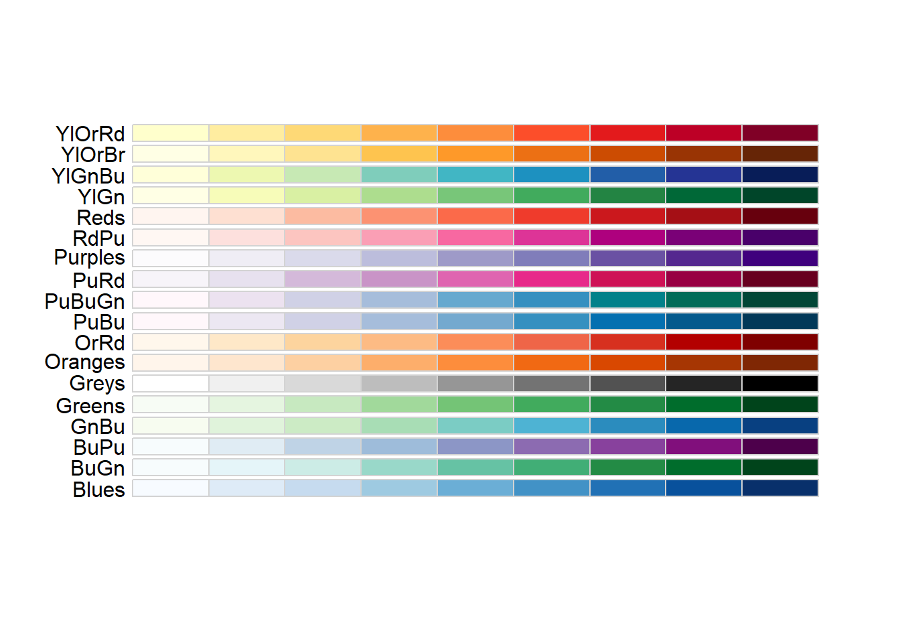

library(palmerpenguins)
ggplot(drop_na(penguins,body_mass_g,species),aes(x=body_mass_g,fill=species)) +
geom_density()1 Expanding our palettes: Discrete colors
When working with color scales in ggplot2, the general pattern for the functions works something like this:
scale_color_*scale_fill_*
Where the * refers to the method that will be used. So far, we’ve mostly been using the functions scale_color_manual and scale_fill_manual which let us control the colors in the plot via a vector of color values (e.g, c("red","blue",""green")). However, there are many additional options for manipulating the colors used in the plots.
1.0.1 Discrete color scales
Discrete color scales are used when there are a set number of colors being used. For example, if you have 8 different categories in a variable, you might use 8 different colors to represent them.
To view these different options, we’ll use the penguin data, but we’ll try it using something we haven’t really dealt with yet: density plots. These are like histograms, but instead of representing continuous data as binned values in a series of bars, it uses a smoothed polygon to show the distribution of values:
By default, the density values on the y-axis are the number of individuals in a given body mass divided by the total number in the species. These numbers are quite small, so they are being expressed in scientific notation. If instead we wanted to show the actual number of penguins, we could use the after_stat function for the aesthetic mapping of the y variable, and ask it to use counts:
library(palmerpenguins)
ggplot(drop_na(penguins,body_mass_g,species),aes(x=body_mass_g,y=after_stat(count*100),fill=species)) +
geom_density()These numbers are now reflecting the actual numbers of penguins in each species category. The choice here is up to you whether to use density or counts, but it’s helpful to think about how an audience will interpret these values.
1.0.1.1 Predefined discrete color scales
R comes with several predefined options for dealing with discrete color scales. We’ll discuss a few options here:
1.0.1.1.1 ColorBrewer
ColorBrewer is a tool developed set of color schemes, or palettes, that were originally developed for making thematic (choropleth) maps more readable. These palettes can also be used for making plotting colors more effective as well. These are built into ggplot via the RColorBrewer package. We can get a look at these different palettes by loading that package and using the display.brewer.all function
library(RColorBrewer)
display.brewer.all(type="seq")
display.brewer.all(type="div")
display.brewer.all(type="qual")The three different type arguments used here (“seq”, “div”, and ““qual”“) refer to types of palettes that are useful for different applications:
Sequential: These colors go follow a light-to-dark pattern, and are used for ordered data (e.g., number of coal-burning power-plants in a country)
Diverging: Critical values at both ends, useful when the emphasis is on deviation from a central value (e.g., is the median home price in a county higher or lower than the national average?)
Qualitative: No meaningful order or value, colors are used to gen (e.g., bony fish species observed in a reef)
The text at the left of each palette being displayed is the shorthand name used by RColorBrewer to refer to that specific palette. A subset of these are also color vision deficiency friendly:
display.brewer.all(type="all",colorblindFriendly = TRUE)The scale_color_brewer() function lets us use these palettes in our plots:
ggplot(drop_na(penguins,body_mass_g,species),aes(x=body_mass_g,y=after_stat(count),fill=species)) +
geom_density() +
scale_fill_brewer(type="qual",palette = 1)The palette argument used here refers to the position of the palette within that type (i.e., the first palette in the “qual” type). However, if you know which specific palette you want to use, you can skip the type argument and refer to the palette by name:
ggplot(drop_na(penguins,body_mass_g,species),aes(x=body_mass_g,y=after_stat(count),fill=species)) +
geom_density() +
scale_fill_brewer(palette = "Set1")1.0.1.1.2 Viridis
Additional R packages provide more palettes. For example, the viridis package provides a set of palettes that are colorful, uniform (distance in value = distance in color), and robust to color vision deficiency. To access these, we need to load the viridis package first.
library(viridis)The palettes provided by the viridis package can be viewed here. The names of each palette are accessed using the option argument. We can view a set of colors from the mako palette using the viridis_pal function:
viridis_pal(option="mako")(12) [1] "#0B0405FF" "#231526FF" "#35264CFF" "#403A75FF" "#3D5296FF" "#366DA0FF"
[7] "#3487A6FF" "#35A1ABFF" "#43BBADFF" "#6CD3ADFF" "#ADE3C0FF" "#DEF5E5FF"This is a strange-looking function call, since the number of color values is actually requested outside of the function’s parentheses. These are not common in R. However, what it gives us back is a vector containing the hexidecimal codes for 12 equally-spaced color values across this palette.
Of course, most of us don’t immediately know what colors correspond to different hexidecimal codes. To see what these look like, we can put this whole thing in the show_col function from the scales package.
library(scales)
Attaching package: 'scales'The following object is masked from 'package:viridis':
viridis_palThe following object is masked from 'package:purrr':
discardThe following object is masked from 'package:readr':
col_factorshow_col(viridis_pal(option="mako")(12))We can use this to quickly look at other palettes as well and choose one we like. For example, the magma palette:
library(scales)
show_col(viridis_pal(option="magma")(12))For plotting, let’s stick with the original viridis scheme, which goes from a deep purple to a bright yellow. To use this on the fill color, we would use the scale_fill_viridis_d function:
ggplot(drop_na(penguins,body_mass_g,species),aes(x=body_mass_g,y=after_stat(count),fill=species)) +
geom_density() +
scale_fill_viridis_d(option="viridis")Why “d”? This is telling us that we are using colors for a discrete application. There is also scale_fill_viridis_c for continuous data and scale_fill_viridis_b for binned data.
1.0.2 Additional fine-tuning
This plot looks OK, but we can’t really see what’s going on with the right side of the distributions for the Adelie and Chinstrap penguins, so we might want to change the transparency so we can see what’s going on behind the Gentoo distribution. Plot transparency is accessed using the alpha argument, which can be supplied directly to the geom that it is being applied to:
ggplot(drop_na(penguins,body_mass_g,species),aes(x=body_mass_g,y=after_stat(count),fill=species)) +
geom_density(alpha=0.5) +
scale_fill_viridis_d(option="viridis")Now the shape of the distributions comes into clearer view. The 0.5 value here is a half-way point between completely opaque (1) and complete transparent (0). You can modify this value to get the look you want.
You may also want to change the outline colors as well. To get at these, we need to add color to our aesthetic mapping, and map it to species:
ggplot(drop_na(penguins,body_mass_g,species),aes(x=body_mass_g,y=after_stat(count),fill=species,color=species)) +
geom_density(alpha=0.5) +
scale_fill_viridis_d(option="viridis") Oops! This is still drawing using the default color scheme. To get them to match, we’d need to add the scale_color_viridis_d function to modify color in addition to fill:
ggplot(drop_na(penguins,body_mass_g,species),aes(x=body_mass_g,y=after_stat(count),fill=species,color=species)) +
geom_density(alpha=0.5) +
scale_fill_viridis_d(option="viridis")+
scale_color_viridis_d(option="viridis")Not bad. Another approach might be to just drop the outlines by removing the color argument from the aesthetic mapping and then adding color=NA to the geom arguments:
ggplot(drop_na(penguins,body_mass_g,species),aes(x=body_mass_g,y=after_stat(count),fill=species))+
geom_density(alpha=0.5,color=NA) +
scale_fill_viridis_d(option="viridis")This looks pretty good. To finish our plot, we can switch the theme to one with less grey in the background, and add our labels.
ggplot(drop_na(penguins,body_mass_g,species),aes(x=body_mass_g,y=after_stat(count),fill=species))+
geom_density(alpha=0.5,color=NA) +
scale_fill_viridis_d(option="viridis") +
theme_bw() +
labs(x="Body mass (g)",y="n",fill="Species")
Try it yourself!
Try the other color schemes in the viridis package with the plot above and see how it looks. Do some color schemes work better than others?
1.0.3 Greyscale
A final way to which avoids issues with color vision deficiencies is to plot in greyscale. The function you would use is scale_fill_grey. For example:
ggplot(penguins,aes(x=species,fill=species)) +
geom_bar() +
scale_fill_grey(start=0,end=1)The start and end arguments refer to where on the scale of black (0) to white (1) you want the first and last values in your mapped variable. So here, since Adelie is the first species, it is given in black, and Gentoo, being the last, is in white.
We can see what this looks like in our desntiy plot by replacing the viridis fill with the grey fill:
ggplot(drop_na(penguins,body_mass_g,species),aes(x=body_mass_g,y=after_stat(count),fill=species)) +
geom_density(alpha=0.5,color=NA) +
scale_fill_grey(start=0,end=1) +
theme_bw() +
labs(x="Body mass (g)",y="n",fill="Species")Obviously, this has some issues. For example, we can’t see white on the white background from our theme. One way to deal with this would be to change the theme again; however, other shades of background might be equally problematic.
Another way would be to set different start and end values so that all of the values end up being some shade of grey:
ggplot(drop_na(penguins,body_mass_g,species),aes(x=body_mass_g,y=after_stat(count),fill=species)) +
geom_density(alpha=0.5,color=NA) +
scale_fill_grey(start=0.2,end=0.8) +
theme_bw() +
labs(x="Body mass (g)",y="n",fill="Species")This solved one problem, but created another: it’s hard to distinguish places with overlap, particularly with the Adelie and Chinstrap penguins. We could help distinguish these by eliminating the transparency and adding the black outlines back in:
ggplot(drop_na(penguins,body_mass_g,species),aes(x=body_mass_g,y=after_stat(count),fill=species)) +
geom_density() +
scale_fill_grey(start=0.2,end=0.8) +
theme_bw() +
labs(x="Body mass (g)",y="n",fill="Species")This is probably about as good as it is going to get, although we’ve sacrificed the visibility of parts of the back for clarity in the overlap. Going through this process highlights tradeoffs you might need to make when using this kind of plot. The layering of different polygons atop one another can help to show different distributions simultaneously, but it can also be source of confusion where overlaps and transparencies are concerned. It’s important to make sure when you’re plotting to consider whether someone might be able to read the graph without too much confusion.